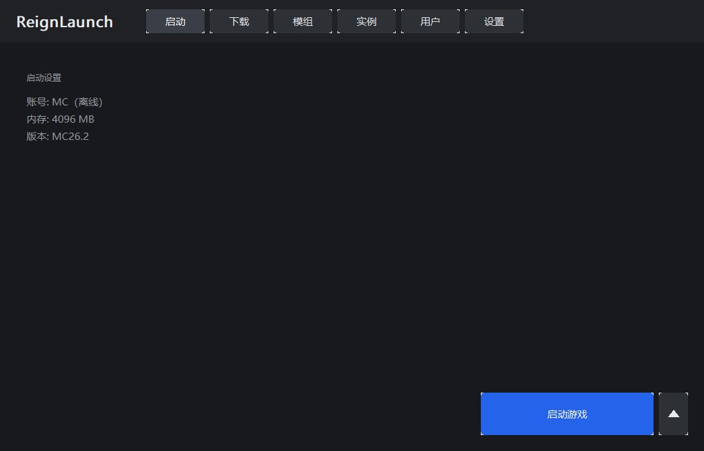
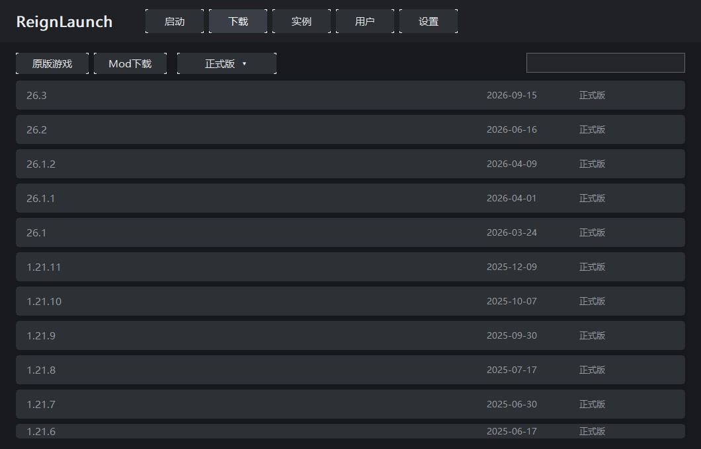
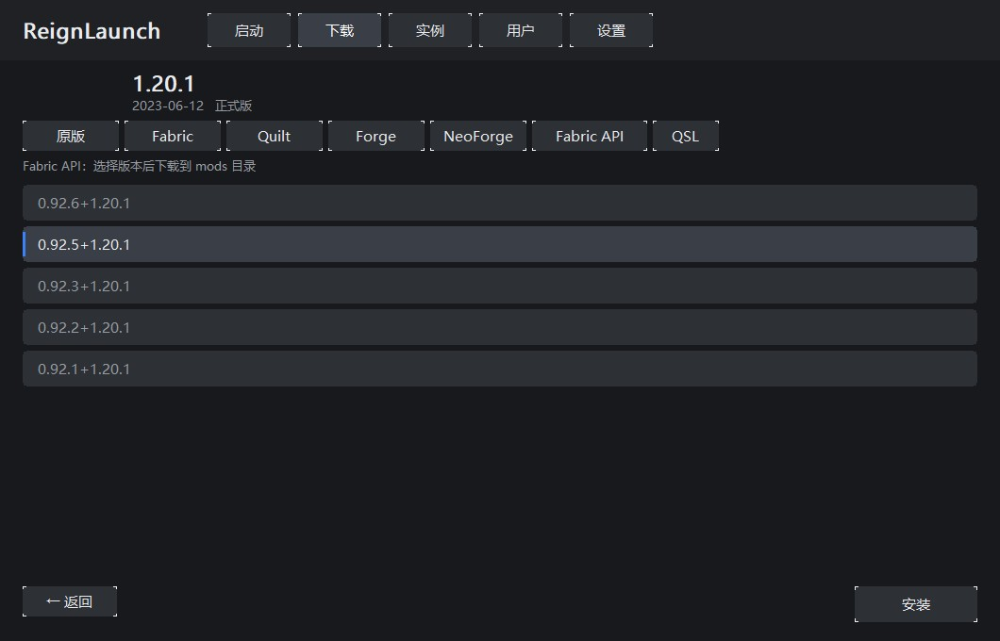
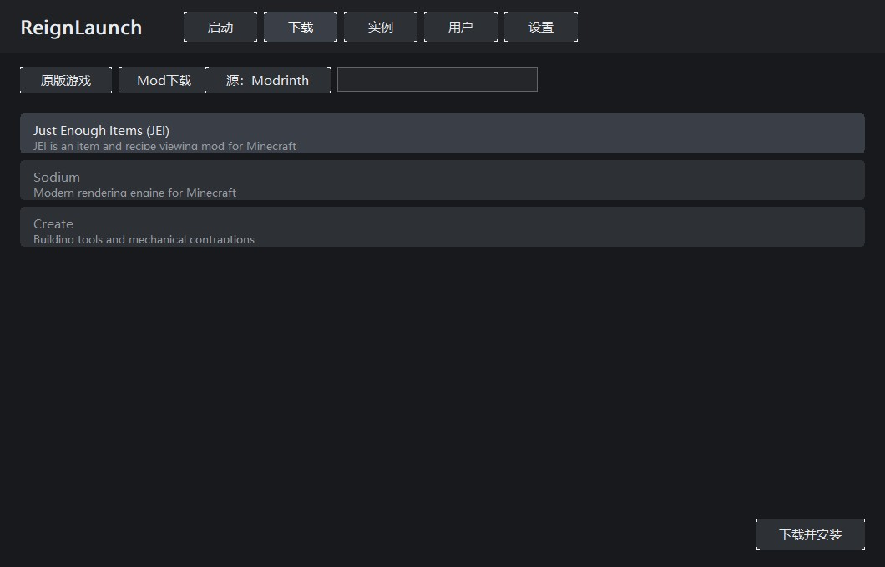
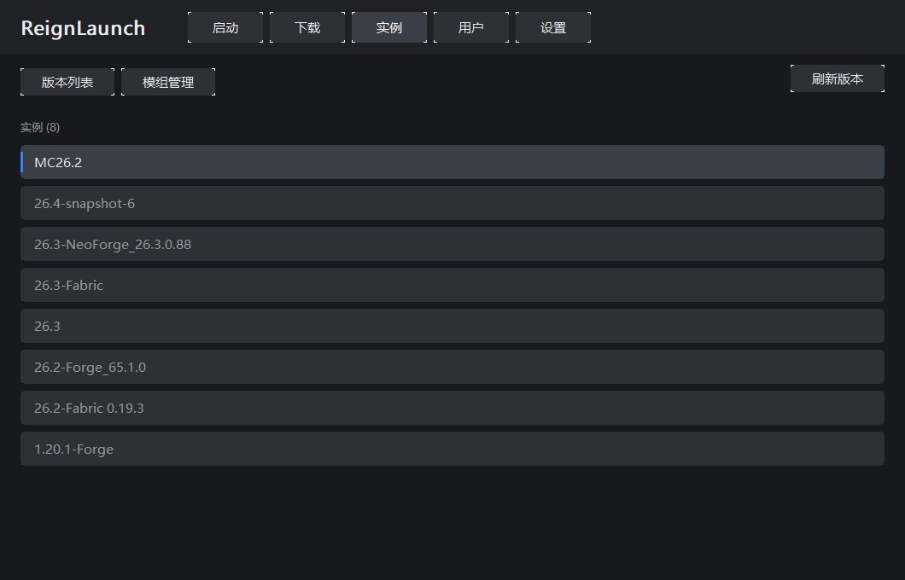
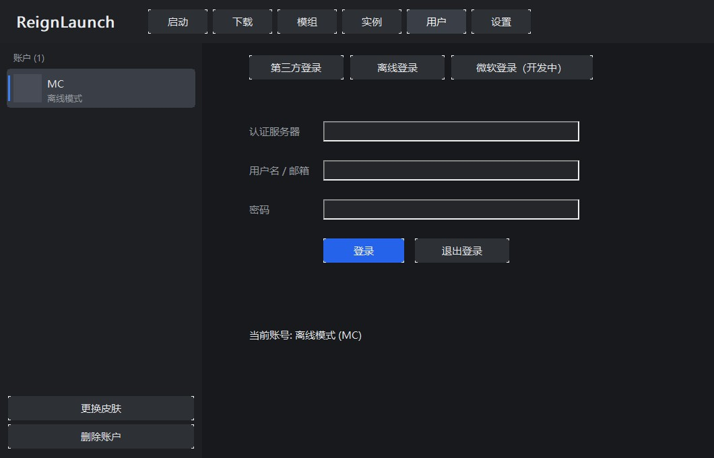
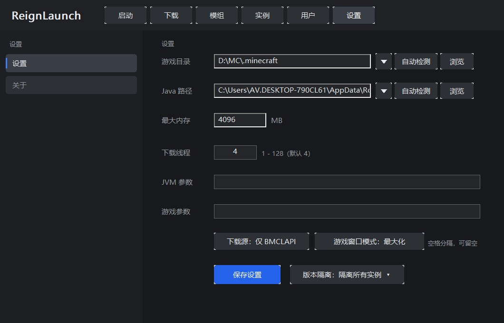

⛏️
原版一键安装
直连 Mojang 清单，按正式版 / 快照 / 远古版 / 愚人节分类，搜到即装。
用 C++17 + Win32 GDI 从零手写，不套壳、不打包 Electron。 一个 7MB 的 exe 就能装原版、装加载器、装模组、管实例。
发布于 —

FEATURES
没有广告、没有捆绑、没有登录墙。装完就能玩。
直连 Mojang 清单，按正式版 / 快照 / 远古版 / 愚人节分类，搜到即装。
Forge、Fabric、NeoForge、Quilt 都能选具体版本；原版则完全不装加载器。
启动器内搜索 Modrinth，选中版本直接装进对应实例的 mods 目录。
三档隔离策略，彻底解决「Forge 找不到 mods」的老问题。
按版本 JSON 的 majorVersion 选 Java，优先最贴近的版本，不会拿 Java 8 开 1.21。
多账户切换，离线皮肤写进 CustomSkinLoader 目录，单人游戏也能看到自己的皮。
启动画面叠在主窗口内，贴底进度条，等游戏窗口真正出现才算完成。
按发布时间判断新版本，下载失败自动切镜像加速。
SCREENSHOTS
深色、克制、信息密度高。






GET STARTED
配置保存在 %APPDATA%\ReignLaunch\config.json，换机器拷过去就行。
# 只输出启动命令，不启动游戏（排查用）
ReignLaunch.exe --dump 1.20.1-Forge
# 生成到 dump.txt：
java.exe -Xmx4096M -Djava.library.path=... \
-cp "libraries/..." net.minecraft.client.main.Main \
--username Steve --gameDir ... --version 1.20.1-ForgeFAQ
需要。启动器会按版本自动挑 Java，本机没有对应版本时会提示并给出 Adoptium 下载入口。
微软正版登录仍在开发中。目前支持离线账户和第三方 Yggdrasil（如 LittleSkin）。
这是版本隔离问题。设置页把隔离策略改成「隔离所有实例」，模组就会被放到 versions/<实例>/mods，Forge 才读得到。
CurseForge 官方接口需要 API Key。可以在 config.json 里填 cfApiKey，或填 cfProxy 指向自己的中转站。
不会。启动器只在你主动检查更新和下载时访问网络，没有遥测。